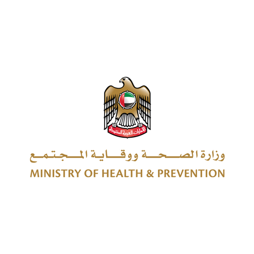

Healthcare Issues / 1 Apr 2020
UAE Government continues to assess preventive, precautionary measures to contain coronavirus

The UAE Government will continue to raise public health awareness and assess preventive and precautionary measures as part of its drive to boost national solidarity in containing the coronavirus, COVID-19.
''Towards this end, the National Emergency Crisis and Disasters Management Authority, NCEMA, announced on Wednesday the launch of 'Weqaya,' a virtual platform designed to raise public health awareness in relation to the coronavirus, and provide reliable updates and solutions as well as preventative health and safety measures to curb the spread of COVID-19, said Dr. Farida Al Hosani, the official spokesperson for the UAE health sector, during the regular media briefing on Wednesday. In the briefing, she highlighted the latest COVID-19 developments in the country and the measures taken by Emirati authorities to combat the spread of the pandemic.
Dr. Al Hosani explained: ''Weqaya seeks to raise public awareness and avoid coronavirus infection in a simple way. Users will also have the opportunity to communicate with medical and health experts by sending in queries via the website.’' She announced the formation of the Weqaya Field Team, which consists of volunteers from various nationalities, to conduct public awareness campaigns among members of diverse communities. A call centre was also launched to provide information, guidelines and instructions in coordination with other health call centres through the toll free contact 800-WEQAYA.
Dr. Al Hosani revealed the UAE has established a new massive laboratory to address the need for population-scale detection and diagnosis of COVID-19. The laboratory is capable of conducting tens of thousands of real-time reverse transcription-polymerase chain reaction, RT-PCR, tests per day and is the first in the world of this scale to be operational outside of China.
The laboratory is a qualitative addition to the UAE's health sector, she noted. Located in Masdar City, Abu Dhabi, it was built on a war footing and operationalised by G42 and BGI in only 14 days, providing an immediate solution to COVID testing scale-up needs in the UAE. This laboratory capacity will enable a rapid response to the current outbreak by accelerating the diagnosis, identification of suspected cases, the release of recovered patients, and the screening of close contacts and high-risk groups.
The spokesperson for the UAE health sector stressed the importance of participation and support by the general public in the ‘Dedication at Work, Safety at Home’ campaign, launched by the UAE Government. She thanked employees and personnel working from home for their adherence to instructions, which will contribute to the success of the national preventive measures.
''Work in our country didn't stop and will never stop, if we take the preventive and precautionary measures. Your health and safety is a top priority to us... Our ethical and national responsibilities require us to pursue our businesses, especially those related to people’s livelihood. Our goals is to continue this national campaign.'' In a message of advice to individuals and families, Dr. Al Hosani said: "I received many messages of displeasure from our fathers and mothers about limited family gatherings and visits by their love ones. I assure you that the ongoing measures aim to protect your safety and wellbeing and that of senior citizens and senior residents. Your health is a priority. Communication, however, will continue at all levels."
In a special message of thanks to parents, she said: "To educators of generations and makers of heroes, we know that we are passing through exceptional circumstances. We appreciate the heavy responsibility placed upon your shoulders inside the family, including work, education and other household chores. This great role is important for national efforts to succeed."
''Our opportunity today as families is to be more cohesive and interconnected, to revive our life and values, and to strengthen our duty to preserve our nation and community,'' Dr. Al Hosani concluded.
Related News
Ministry of Health Participates inTherapeutic Tourism Conference
in Turkey
Healthcare Issues / 18 June 2014
Dialysis Center Opens in Fujairah
Healthcare Issues / 18 June 2014

Ramadan Timings in Sharjah Blood Transfusion and Research Center During Ramadan